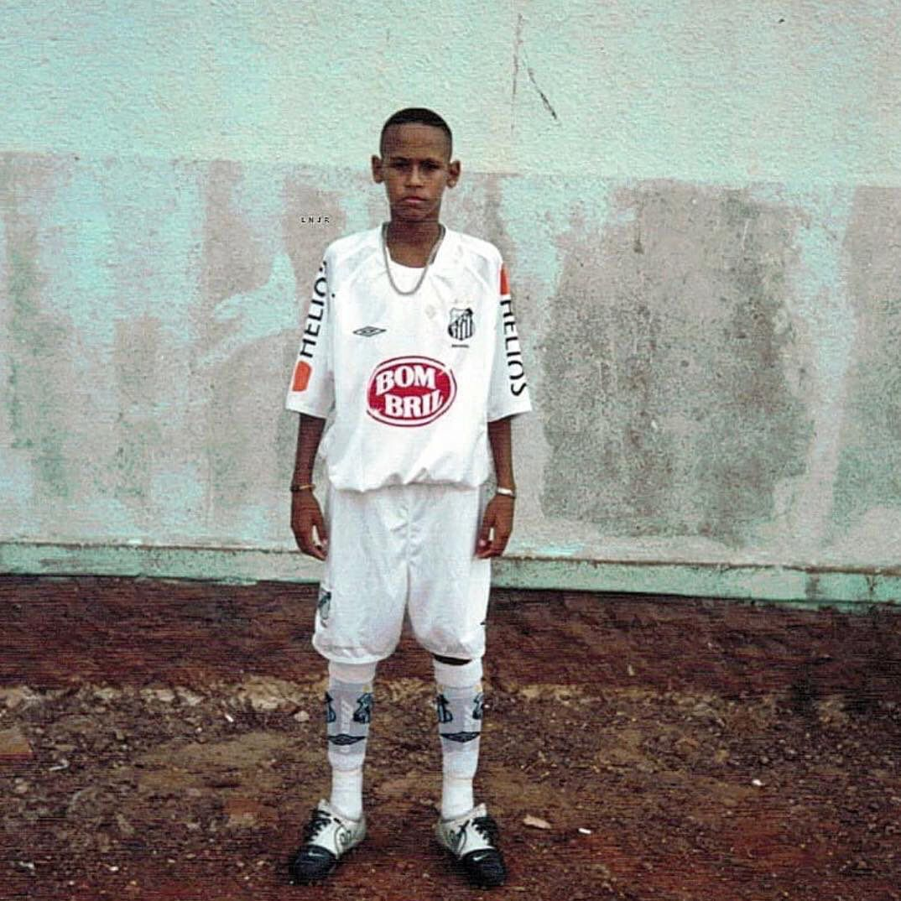
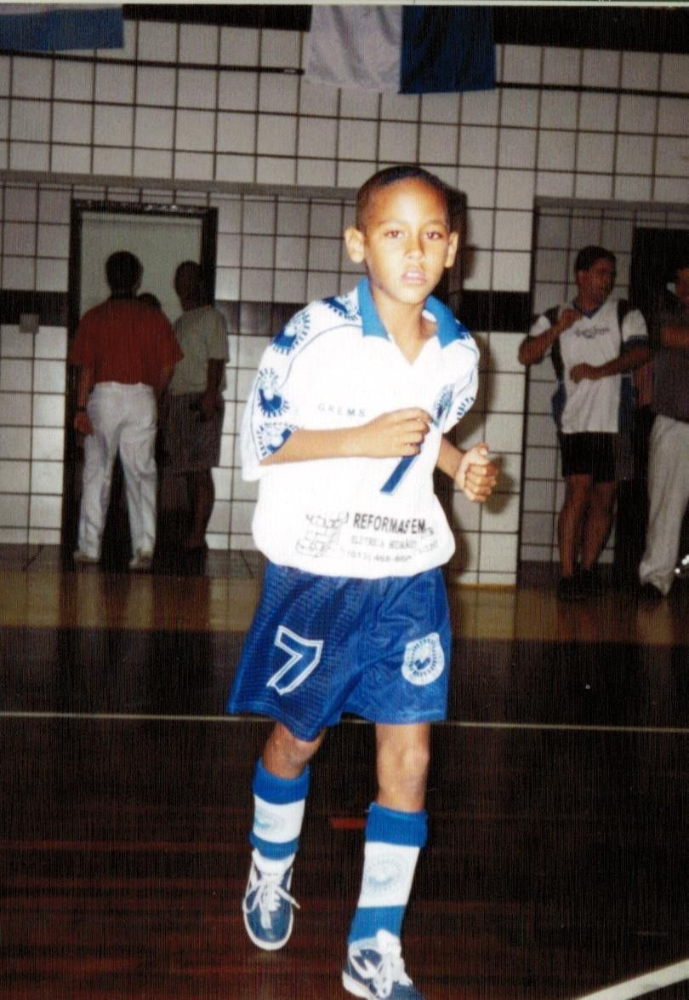
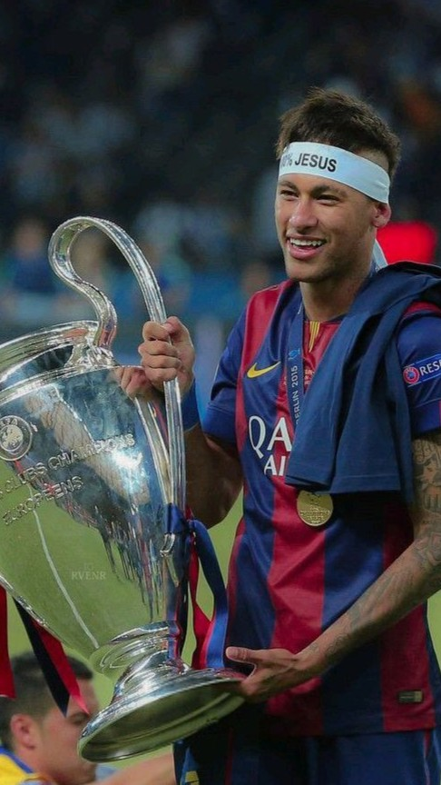
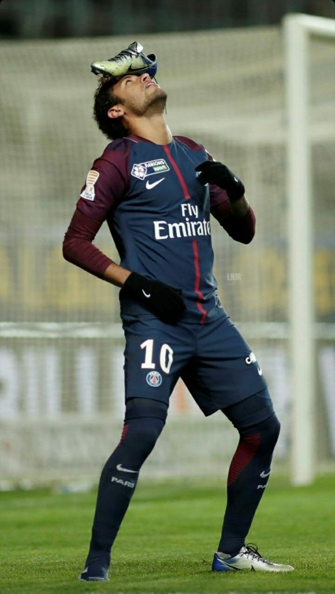
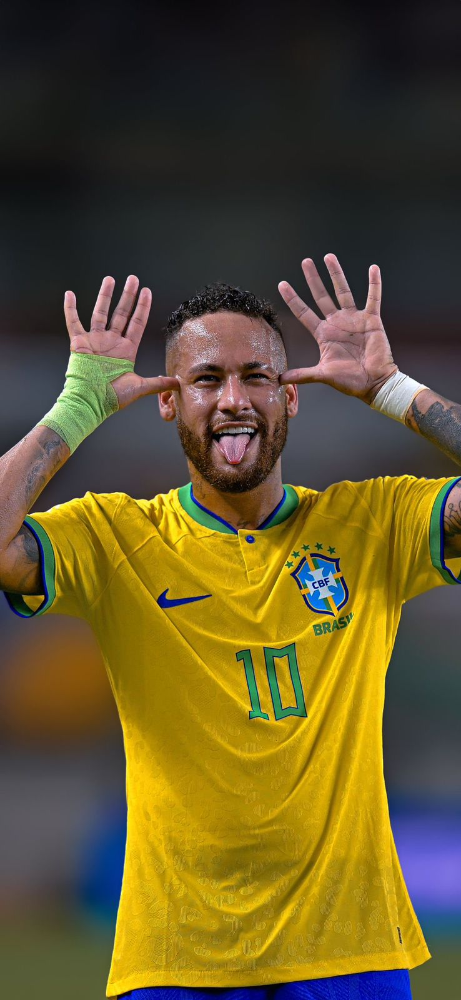
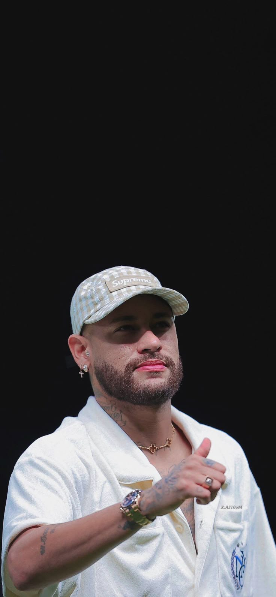
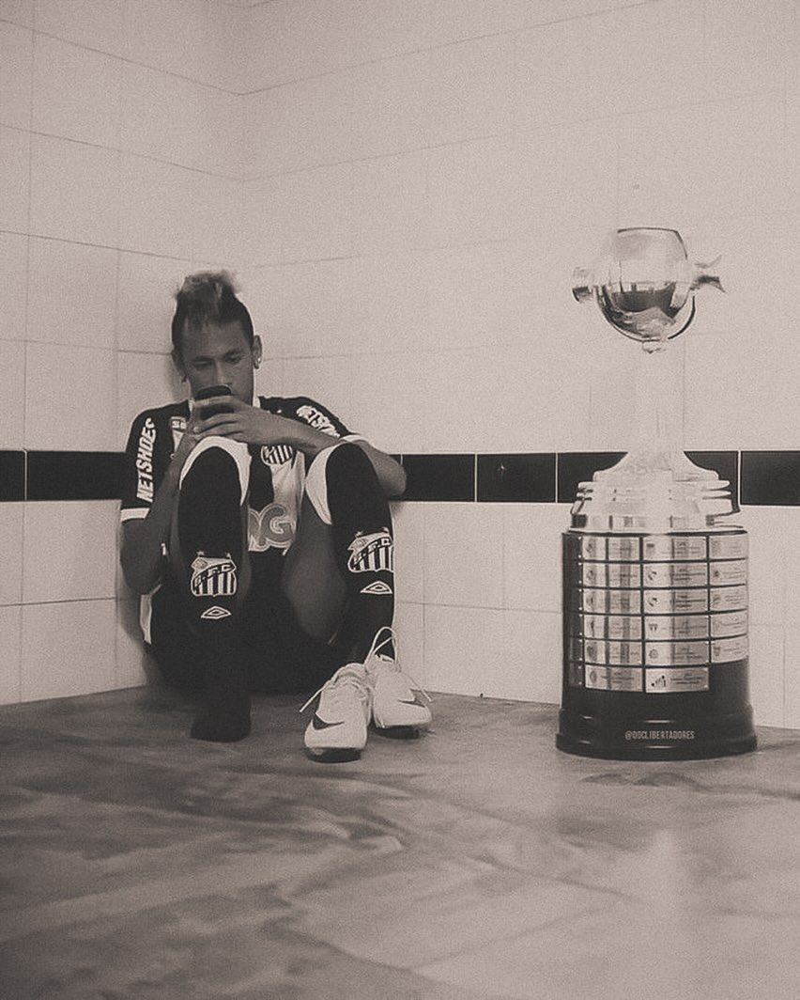
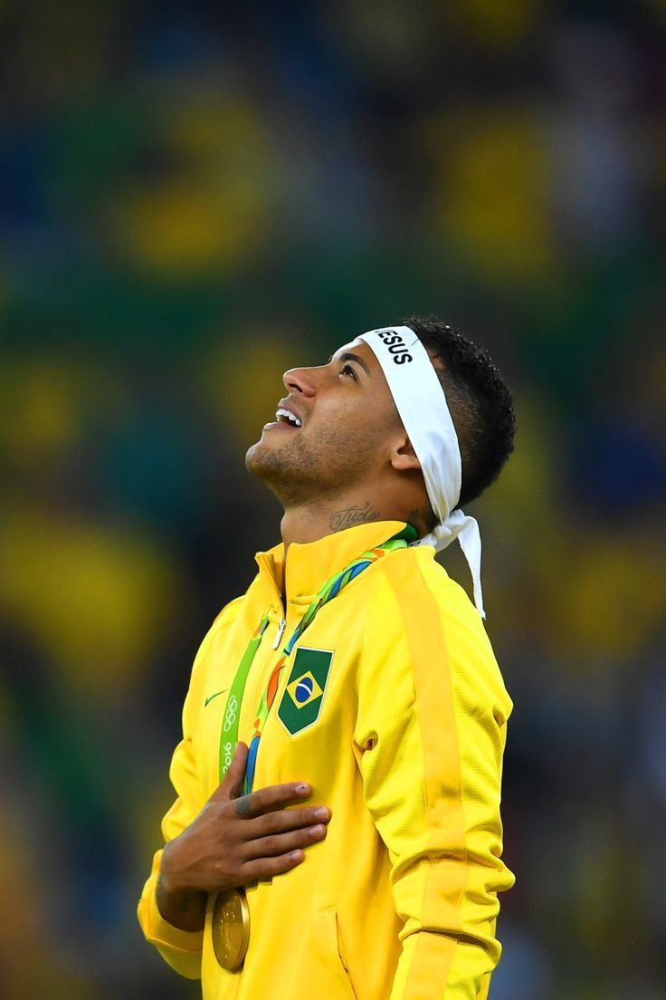
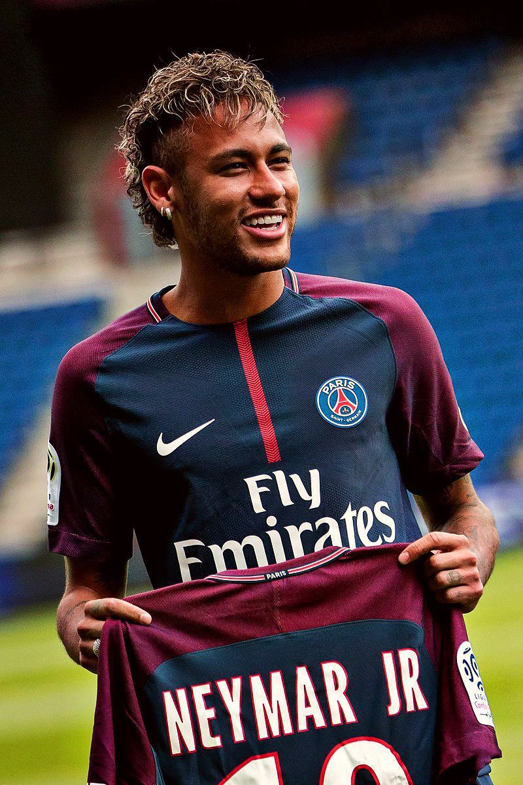
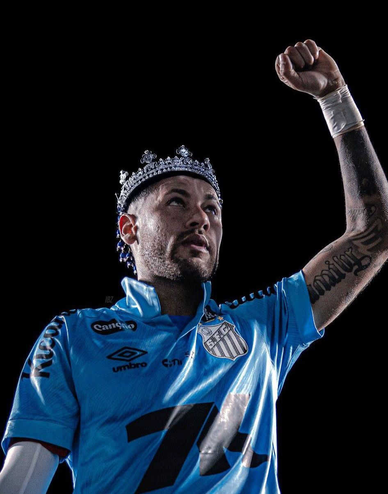

O CRAQUE BRASILEIRO
Talento, ousadia e paixão pelo futebol — explore a incrível trajetória do camisa 10 do Brasil.
TRAJETÓRIA
Dos campos do Santos aos maiores estádios do mundo





HISTÓRIA
Os capítulos mais marcantes de uma carreira lendária

2009Assina seu primeiro contrato profissional e em poucos meses se torna a maior revelação do futebol brasileiro, encantando multidões com dribles desconcertantes.
O trio MSN — Messi, Suárez e Neymar — formou o ataque mais devastador da história do futebol moderno, conquistando tudo que havia para conquistar.

2016Neymar marcou o gol decisivo nos pênaltis no Maracanã e deu ao Brasil seu primeiro ouro olímpico no futebol masculino, encerrando um jejum histórico.

2017Pelo valor histórico de €222 milhões, Neymar torna-se o jogador mais caro de todos os tempos e leva o PSG a novos patamares, chegando à final da Champions em 2020.

2025O filho pródigo volta para casa. Após passagem pelo Al-Hilal e uma grave lesão no joelho, Neymar retorna ao clube que o revelou e reencontra a torcida que nunca deixou de amá-lo.
SABIA QUE...
Fatos incríveis sobre o maior camisa 10 do Brasil
Neymar é o maior artilheiro da história da Seleção Brasileira, com mais de 79 gols, superando Pelé em 2023.
Marcou seu primeiro gol como profissional com apenas 17 anos, em 2009, defendendo o Santos Futebol Clube.
A transferência para o PSG em 2017 por €222 milhões ainda é o maior valor pago por um jogador na história do futebol.
Decidiu o ouro olímpico de 2016 com o pênalti decisivo no Maracanã, encerrando um jejum histórico do Brasil.
Reconhecido mundialmente por combinar dribles desconcertantes, visão de jogo excepcional e uma alegria inconfundível dentro de campo.
Assista ao compilado de todos os gols históricos de Neymar defendendo o Brasil.
Assistir no YouTubeDa infância humilde em Mogi das Cruzes ao topo do futebol mundial — leia o artigo completo e apaixonado sobre Neymar Jr., escrito por Kawê Henrique.